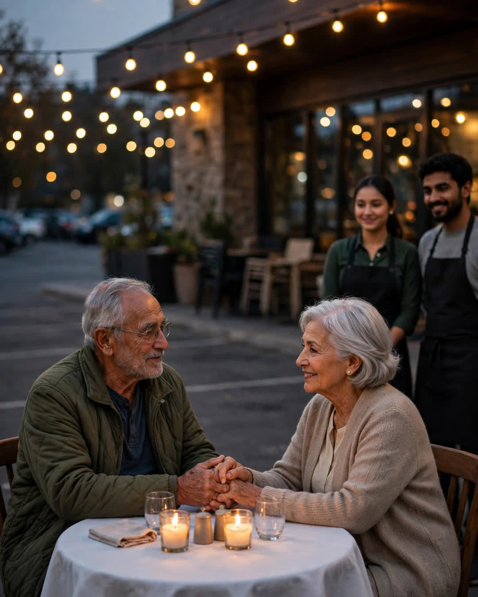

The Anniversary Table
A Clipp Kaili original story

For forty years, my parents celebrated their anniversary at the same corner table, and in the forty-first year, the restaurant closed.
It was called Marino's. Red-checkered curtains. Candles in little glass jars. A menu that never changed and an owner, Sal, who never let my father pay for dessert. Table six, in the corner by the window, was theirs — not by reservation, just by history. Sal wrote their names in pencil on the reservation book every June 14th before they ever called.
They had their first real date there in 1984, back when Dad was a bus driver with one good jacket and Mom ordered the cheapest thing on the menu because she'd seen his wallet when he paid for parking. He told her that night, "One day I'll bring you here and you can order anything." She ordered the same chicken dish for the next forty years anyway.
Some women want Paris. My mother wanted table six.
They sat there through everything. The year the twins were born and they were too tired to talk, they held hands over the bread basket and fell asleep smiling at each other between courses. The year Dad lost his job, Mom paid with grocery money and never told him until their thirtieth. The year of her surgery, Dad brought her in a wheelchair, and Sal moved three tables so she could sit in her corner like a queen.
So when the letter came this spring — Marino's was closing, the building sold, thank you for forty wonderful years — my mother read it twice at the kitchen counter and folded it very small, the way people fold things that hurt.
"Well," she said. "Forty was a good number."
My father said nothing. He is a man of few words, and grief is not one of them.
On June 14th, he told her to put on her blue dress anyway.
"Sam, the restaurant is closed."
"Put on the dress, Ellen."
He drove her downtown with a blanket on her lap because her knees get cold now. Marino's was dark. The sign was already down. There was a chain on the door. Mom looked at that chain for a long moment, and I watched her decide, the way wives of sixty years decide, to be brave about one more loss.
Then the parking lot lights came on.
Table six was there. In the middle of the empty parking lot, under the string lights Sal and his staff had hung from two ladders, sat their corner table — white cloth, two candles, the little glass jars. Sal, seventy-eight and in his good apron, stood beside it with two menus. His daughter had come back from Ohio to cook. His grandson, home from college, was the waiter.
"You think a building keeps a table?" Sal said, pulling out Mom's chair. "A table is where the people sit. Sit."
They ate their chicken in a parking lot while traffic slowed down to watch. The grandson forgot the bread. The candles blew out twice. Mom cried into her napkin and then laughed at herself for crying, and Dad — quiet Dad — reached across that table in the middle of all that asphalt and took her hand and said the most he had said all year.
"We never needed the room, Ellen. We were the room."
At home that night, Mom put the little paper menu in her Bible, where the important things live.
Forty years of anniversaries had an address.
The forty-first taught us it never did.
This story is a work of fiction, written to touch hearts and bring families closer.
← Back to all stories